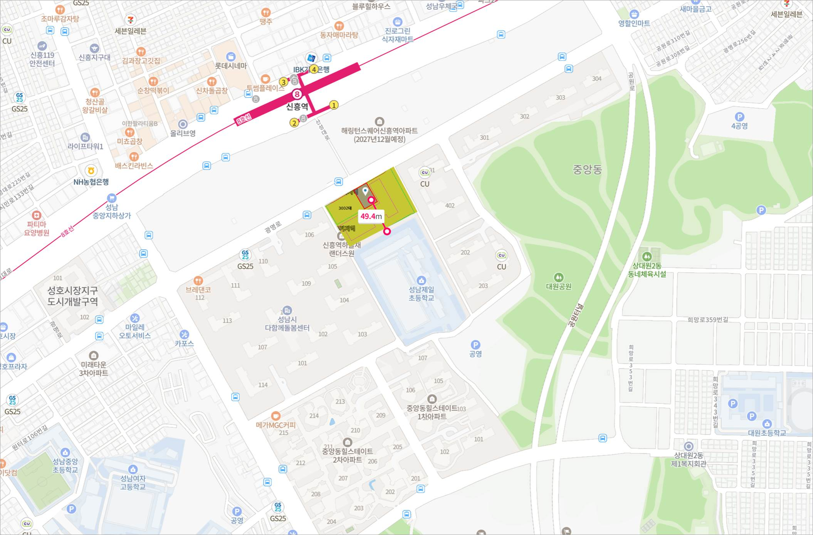

건축물의 건축 행위는 기본적으로 국민의 안전과 생활 환경에 직접적인 영향을 미치기 때문에, 공공의 복리를 위해 적합한 경우에만 건축의 허가가 이루어져야 합니다. 건축법 제1조도 법의 목적이 공공복리의 증진에 이바지하는 것을 목적으로 함을 명확하게 밝히고 있어 이를 뒷받침하고 있습니다.
그러나 중앙동 3003번지 부지에 하나님의교회를 건축 하는 것은 다음과 같은 사유로 인하여 공공의 복리를 심각하게 침해하며, 헌법적 가치를 훼손합니다.
1) 영유아의 안전과 인근 초등학교 학생들의 학습 환경 저해를 유발합니다.
중앙동 3003번지 종교부지는 3001번지에 위치한 다함께돌봄센터와 불과 50m, 성남제일초등학교와 불과 50m 남짓 떨어져 있습니다.
유소년기부터 초등학생에 이르기까지의 시기는 아직 가치관의 형성이 완전하게 이루어지지 않은 시기로, 보호와 올바른 교육이 필요한 시기입니다.
그런데 하나님의교회는 길을 가고 있는 주부나 아이와 함께 둘이 있는 엄마를 집요하게 따라오면서 포교활동을 하는 노방전도나, 편의점, 학원 등 인근의 상가 및 커뮤니티 속으로 파고 들어와서, 생활속에 침투하는 전략으로 포교 활동을 하는 것으로 유명합니다.
공식적으로는 성인에 의한 미성년자 포교를 하지 않는다고 표방하고 있지만, 최근에는 아세즈 스타 (ASEZ STAR) 라는 중고등학생 봉사단을 만들어서, 봉사활동을 포교활동에 적극 이용하고 있는 모습을 볼 수 있습니다. 또한, 학령기의 아이들은 때로는 친구나 상급생 등 또래집단에 의해서 부모보다 더 큰 영향을 받기도 하는데, 이를 이용하여 반 친구들을 전교생 전도 활동의 타겟으로 정한 뒤, 전시회나 요리 행사 등에 같이 가자고 하면서 접근을 하는 사례도 확인할 수 있습니다.
하나님의교회가 가정의 위기를 초래하고, 종말이 멀지 않았다고 가르치며, 재산의 헌납을 유도하고, 가정의 불화를 야기시킨다는 사례는 이미 TV 방송프로그램이나 언론사 보도를 통해서 대중들에게 많이 알려진 바가 있습니다.
또한, 대법원에서도 다음의 내용이
정정보도가 필요 없는 사항 (사실로 인정되는 사항) 으로
판단하였음을 판례를 통해 알 수 있습니다. (*사건번호2015나2032729, 2015나2032736, 2016도21129, *2015노542, 2017나2069268)
|
1) 하나님의 교회가 1988년, 1999년, 2012년 시한부 종말론을 제시하였음. 2) 하나님의교회 총회장의 저서에 나온 구절은 “가족과 종교적 갈등이 생길 경우, 가족, 가정보다는 신앙을 우선시 하여야 한다" 는 교리를 의미하는 것으로 보임. 3) 하나님의교회 신도들이 관련된 이혼 판결문 등에 의하면 부녀자 신도들 중 종교로 인한 갈등이 원인이 되어 가출을 하거나, 이혼을 한 사례가 적지 않게 발견됨. 4) 부녀자 신도들이 어린 자녀를 하나님의교회에 데려가 교리를 가르치거나, 긴 예배에 참여시키거나, 조용히 설교를 듣게 하기 위해 벌을 준 사례도 있는 것으로 보임 |
다음 표1의 내용은 대법원에서 하나님의교회에 대한 주요 표현이 하나님의교회에 대한 명예훼손이 아니라고 판단한 주요 표현입니다.

표1
이러한 하나님의교회의 포교 방법 및 반사회적인 종교활동의 형태와 그에 따라 가정에 미치는 부정적 영향으로 볼 때, 교육환경보호에 관한 법률에 의한 성남제일초등학교 교육환경보호구역에 하나님의교회 건축 허가가 이루어진 것은, 해당 종교 시설을 거점으로 하여 포교 활동을 함으로 인해, 아직 가치관의 형성이 완전하게 이루어지지 않은 주변의 미성년 학생들이,
1) 하나님의교회가 주장했던 종말론의 영향을 받아, 학업을 포기하고 중단하게 하거나,
2) 가정의 위기 및 불화로 인해 학업을 지속할 수 없는 환경에 처하게 되거나,
3) 노방전도나 방문전도, 개인전도 등 공격적인 포교활동으로 인하여 학습에 직접적인 지장을 받게 되는 등
학습권을 직접적으로 침해 받게 되는, 공공의 이익을 심각하게 훼손하게 하는 사항이라고 판단할 수 있겠습니다.
2) 교통 체증 및 교통 사고 안전 문제를 유발합니다.
‘2024-건축과-신축허가-2’ 에 따르면 하나님의교회에서 연면적 1495.07 평방미터에 지하1층, 지상5층 규모의 종교시설을 건축하는데, 주차면수는 단지 15대만 마련하였습니다.
종교집회는 그 특성상, 많은 수의 신도들이 같은 날, 같은 시간에 동시에 모이게 되므로, 다른 용도로 지어진 건축물과는 다르게, 동시에 많은 인원과 차량이 한꺼번에 모이게 된다는 특징이 있습니다. 중앙동 3003번지에 건축 허가가 이루어진 하나님의교회의 경우 건축면적 348.38 평방미터 중 3개의 층에서만 동시에 종교집회가 이루어진다고 가정하여도, 1인(1좌석) 수용 바닥면적 2.0 평방미터 기준으로 계산시 500여명 가량의 신도가 동시에 종교 집회에 참석이 가능합니다.
이중 절반에 해당되는 50% 만 차량을 이용해서 해당 시설을 방문하여도 250대의 차량에 대한 주차면수가 구비되어야 합니다. (33%가 차량을 이용할 경우 165대)
그러나, 단지 15대의 주차면만이 마련 된 상태에서, 하나님의교회가 완공되어, 건축 허가 목적에 기재된 바에 따라 종교 집회가 이루어지게 될 시에는, 교통 혼잡과 대로변 노상 불법주차에 따른 교통 방해, 교통 시야 확보 제한으로, 교통사고의 증가 및 보행자 안전 사고 발생 증가 등이 기정사실이 됩니다.
특히나, 중앙동 3003번지 부근 광명로는 신흥역하늘채랜더스원과 신흥역효성해링턴플레이스의 주출입구가 위치한 곳이기도 하기 때문에, 중앙동 3003번지에 해당 건축을 허가 하기에 앞서, 교통혼잡유발에 대한 심도 있는 검토와 지역 주민 의견 수렴이 선행된 후, 그 결과에 따라 건축 허가가 반려되었어야 마땅할 것으로 사료되나, 그러지 못한 상태로 건축 허가가 되어, 더욱 크나큰 혼돈과 재앙적 교통 참사가 예상됩니다.
3) 사유재산권의 침해에 해당됩니다.
헌법 제23조는 모든 국민의 재산권은 보장이 되며, 재산권의 행사가 공공복리에 적합하도록 하여야 한다는 것을 규정하고 있습니다.
하나님의교회는 상술한 대법원 판례나 여러 소송 사례로 볼 때, 반사회적 성격을 강하게 띄고 있는 종교 단체이기 때문에, 주민 대다수는 하나님의교회 종교시설 근처에 거주하기를 바라지 않습니다.
따라서, 전세수요자나 매매 수요자 등 많은 시장 참여자들이 하나님의교회에 대해서 우려를 하고 있으며, 그 결과 중앙동 3003번지에 하나님의교회가 들어오게 될 경우, 소유주들은 막대한 재산상 피해가 발생합니다.
바꿔 말하면 하나님의교회의 건축 허가에 의하여, 중앙동에 거주중인 약 1만여명 이상의 주민들은 헌법이 보장하는 재산권의 피해를 받을 수 밖에 없는 결과가 발생되고 말았습니다.
최근 하남시의 종교부지 불법전매 사례에서도 알 수 있듯이, 하나님의교회는 현행법을 위반해 불법전매를 자행하면서까지, 공격적으로 토지를 매입한 후 교회를 건축하고, 포교 활동을 하면서, 가정보다는 신앙을 우선시 하게 하는 가르침을 퍼트려, 사회 혼란과 가정 불화를 야기할 가능성이 있는 반사회적 성격의 유해 종교입니다.
이러한 유해 종교 시설이 중앙동 3003번지, 교육환경보호구역에 들어서게 되면, 학습권을 저해하고, 지역 주민의 재산권에 심각한 침해를 일으키며, 교통 혼잡 및 교통 사고 증가의 문제를 일으키는 등, 공공 복리를 저해할 현저한 우려가 있는 것이 명백하기 때문에, 관계 공무원 여러분들의 즉각적인 공사 중단 조치 및 건축 허가 취소가 필요한 상황입니다.
결론적으로, 중앙동 3003번지에 하나님의교회가 신축될 경우,
1) 가정 파괴, 가정 불화 야기 등 사회 혼란의 우려가 있고,
2) 지역 주민과의 하나님의 교회 신도 사이에서 마찰 발생 및 극심한 지역 사회 갈등이 현실화 되며,
3) 학생들에게는 교육 환경의 저해 및 학습권 침해 문제가 생기게 되고,
4) 헌법이 보장하고 있는 재산권에 대해서 심각한 침해를 야기하며,
5) 교통 혼잡의 유발 및 교통 사고 확률을 증가 시키게 되고,
6) 주민들의 주거권 및 삶의 질을 저하시키고,
7) 주민들은 해당 지역의 통행을 기피할 것이기 때문에, 광명로 특화거리 조성을 포함한 원도심의 도시재생에 심각한 지장을 초래할 것이며,
8) 지역 사회의 지속가능한 발전을 저해하고,
9) 이러한 문제들을 처리하기 위한 제반 사회 비용이 기하급수적으로 증가하여, 사회 경제적 손실이 막대할 것이
분명해 보이기 때문에,
하나님의교회 신축은 중대한 공익상의 문제가 있으므로, 공공복리의 증진을 위하여 성남시 중원구 중앙동 3003번지 하나님의교회의 공사 중단 및 중원구의 ‘2024-건축과-신축허가-2’ 하나님의교회 신축에 대한 건축허가가 즉각 취소되어야 합니다.